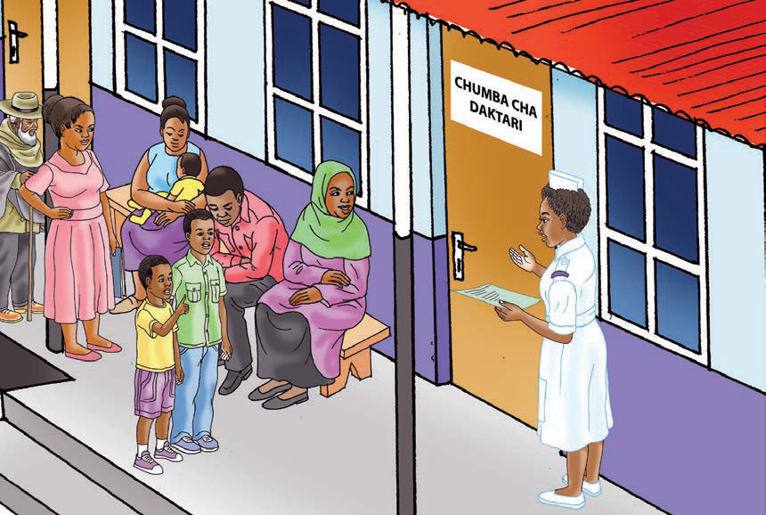

CHUMBA CHA DAKTARI
Tulipofika kwenye kituo cha afya, nilijiandikisha kumuona daktari. Baada ya muda, muuguzi alikuja akasimama mbele ya wagonjwa na kuita majina. Aliita jina langu na kutupeleka katika chumba cha daktari. Mimi na kaka tuliingia kwa daktari. Tulipofika kwa daktari, nilimueleza jinsi ninavyoumwa. Daktari aliniuliza, “Ulianza kukohoa lini?” Nilimjibu, “Nilianza kukohoa jana jioni.” Daktari alinielekeza niende maabara kupima. Majibu yalipotoka, daktari aliniandikia dawa. Baada ya kupata matibabu, mimi na kaka tulirudi nyumbani. Hali yangu iliendelea kuwa nzuri na watu wote walifurahi.